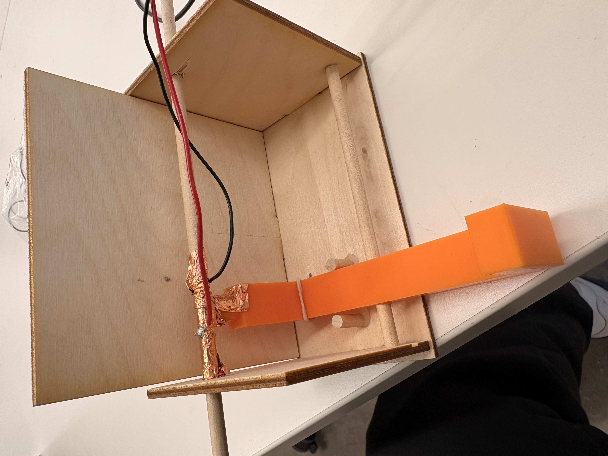
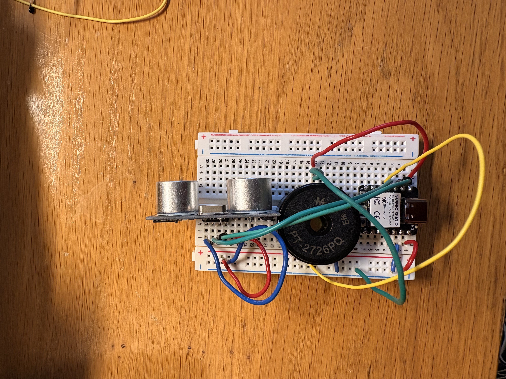
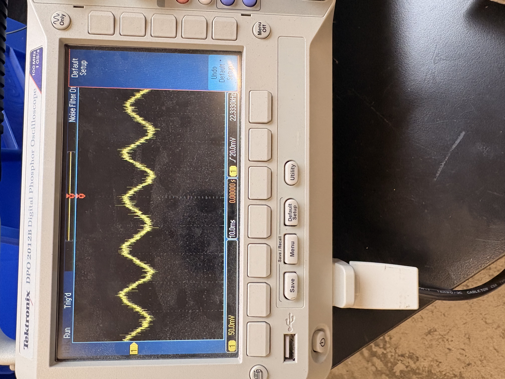

<div class="textcontainer">
<p class="margin"> </p>
<h3>Week 7: Electronic Outputs</h3>
<h4>Assignment: Minimum Viable Product for Final Project</h4>
<h5><strong>Updates</strong>
</h5>
<p>
This week was able to make a lot of good progress on my final project. I incorporated two input devices, which were the hook sensor mechanism and the ultrasonic sensor mechanism. The outputs was the buzzer to indicate when you have forgotten your keys. The main things I completed were:
<ul>
<li>First version of outer casing </li>
<li>Hook Mechanism and Wiring </li>
<li> Coding/ wiring for buzzer and ultrasonic sensor </li>
</ul>
The product works by when a weight is pressed on the key hook, such as a key, it connects the copper tape circuit. This then lets the microcontroller know there is a key on the hook. The ultrasonin
sensor is also running simultaneously, so that when the hook is on and an object passes by within a certain distance the buzzer then sounds. The code shown below includes a way for me to change what the distance is depending on the room setup.
</p>
<hr>
<h5>
<strong> Photos:</strong>
</h5>
<a href="https://youtube.com/shorts/Upy6d4QmZgk?si=r78pz0lvnZgh0Gaa"> Watch Video Here</a>
<br>
<p></p>
<p></p>
<hr>
<h5>
<strong>Code:</strong>
</h5>
<pre><code class="cpp">
int distanceForScan = 25;
unsigned long previousMillis = 0;
int timeBeforeBuzzerEngages = 60000;
class keyHook {
int mainPin;
int currentState;
int lastState;
public:
keyHook(int pinA) {
mainPin = pinA;
pinMode(mainPin, INPUT_PULLUP);
lastState = digitalRead(mainPin);
}
bool keyOnHook() {
currentState = digitalRead(mainPin);
if (currentState == 0) {
return true;
}
else {
return false;
}
}
};
class sonicSensor {
int trigPin;
int echoPin;
int distance;
int duration;
public:
sonicSensor(int trigPin1, int echoPin1) {
trigPin = trigPin1;
echoPin = echoPin1;
pinMode(trigPin, OUTPUT);
pinMode(echoPin, INPUT);
}
int getSignalDistance() {
digitalWrite(trigPin, LOW);
delayMicroseconds(2);
digitalWrite(trigPin, HIGH);
delayMicroseconds(10);
digitalWrite(trigPin, LOW);
duration = pulseIn(echoPin, HIGH);
distance = (duration * 0.0343) / 2;
Serial.print("Distance: ");
Serial.println(distance);
return distance;
}
bool personWalksBy() {
if (getSignalDistance() <= distanceForScan) {
Serial.println("within range");
return true;
}
else {
return false;
}
}
};
class buzzer{
int buzzPin;
bool isOn;
public:
buzzer (int pinb){
buzzPin = pinb;
pinMode (buzzPin, OUTPUT);
}
void buzz (int timeBuzzing){
tone (buzzPin, 500, timeBuzzing);
isOn = false;
}
void buzzOff (){
noTone(buzzPin);
isOn = false;
}
};
keyHook bestHook(D0);
sonicSensor Sensor1(D1, D2);
buzzer Buzzer1(D3);
void setup() {
Serial.begin(9600);
}
void loop() {
if (bestHook.keyOnHook()) {
Serial.print("Key on hook: ");
Serial.println(bestHook.keyOnHook());
if (Sensor1.personWalksBy()) {
Serial.println("within range");
Buzzer1.buzz(1000);
}
else{
Buzzer1.buzzOff();
Serial.print("buzzer turned off: ");
}
}
else{
Buzzer1.buzzOff();
Serial.print("Key NOT on hook: ");
Serial.println(bestHook.keyOnHook());
}
}
</code></pre>
<h5><strong>Next Steps</strong></h5>
<ul>
<li>Add in timer component to code to make sure buzzer isn't always going off when passing by</li>
<li>Add in top wallet sensor </li>
<li> Add in extra hooks</li>
<li> Finalize outer casing</li>
<hr>
<h5><strsong>Oscilliscope</strsong></h5>
<p></p>
<p>
Figuring out the time domain using the Oscilliscope was honeslty pretty confusing for me at first. I orginally tried doing it with a
basic buzzer but wasn't getting any distortion large enough to notice, even after changing the scales. I then used an LED and saw that the domain was at 10.0 ms with 4.00 mV going through the LED.
</p>
</ul>
</div>